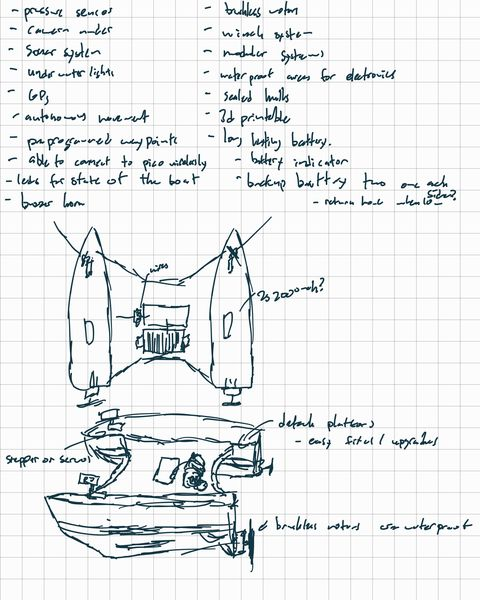
V1 · Spring 2026Designed
The first concept sketch
Requirements and the twin-hull layout, on paper.
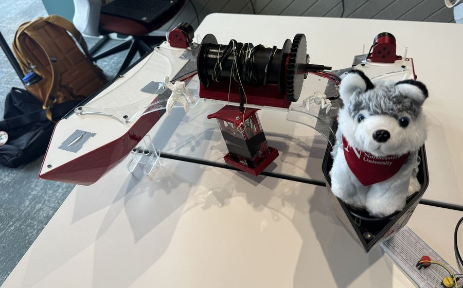
Every part of D.R.E.A.M.S, from the first sketch to the V3 boards, with an honest status on each entry.
Filter by version or by status. Every entry is something we designed, built, tested or tried and abandoned.

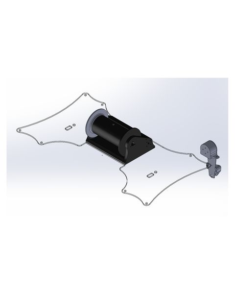
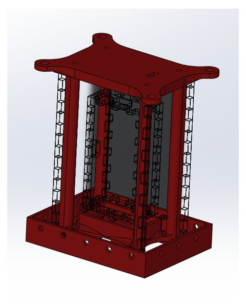
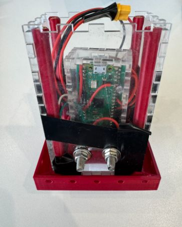
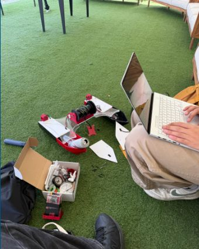
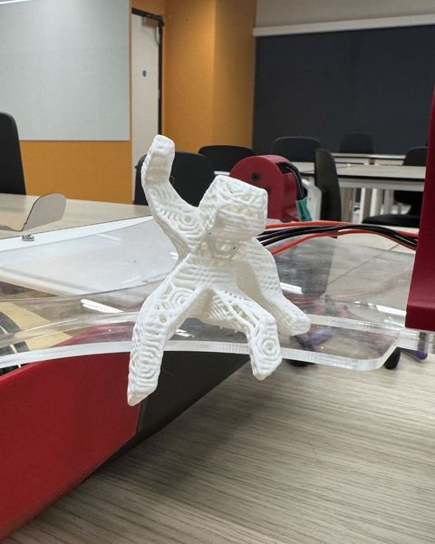
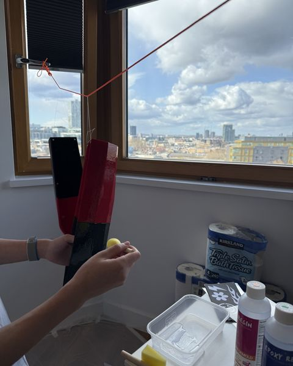
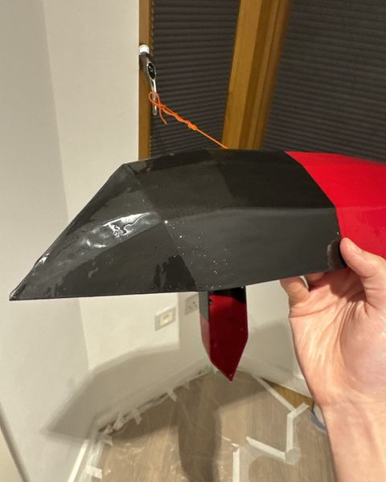
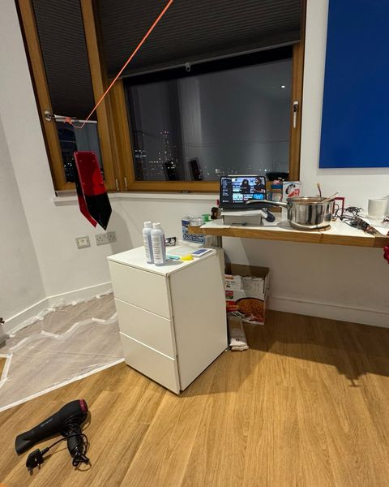
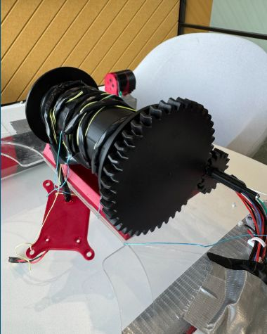
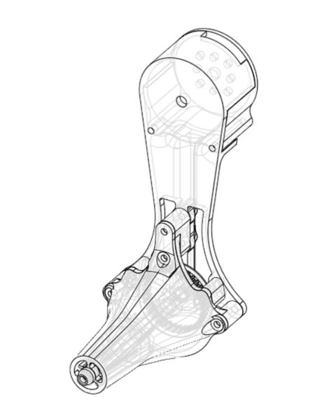
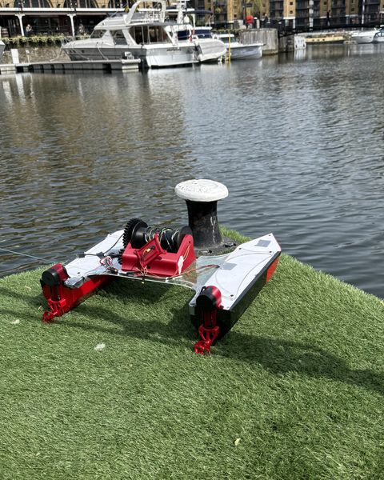
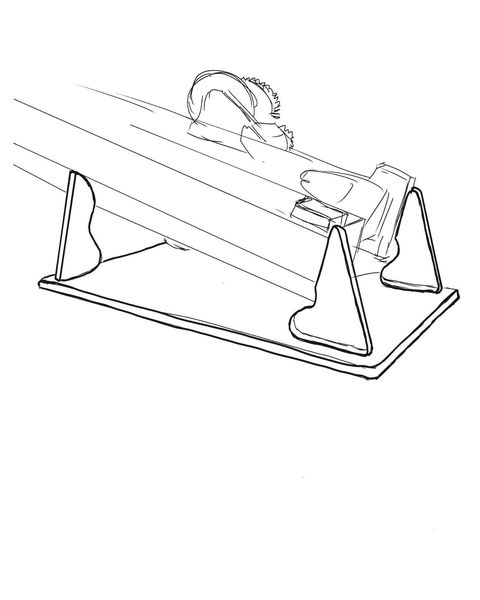
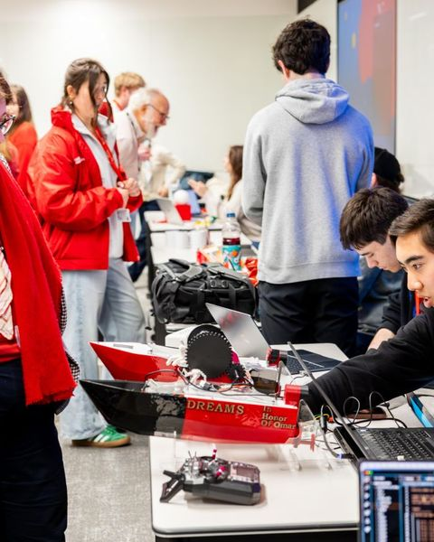
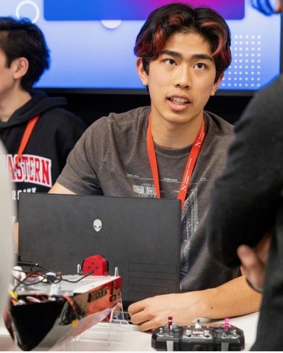
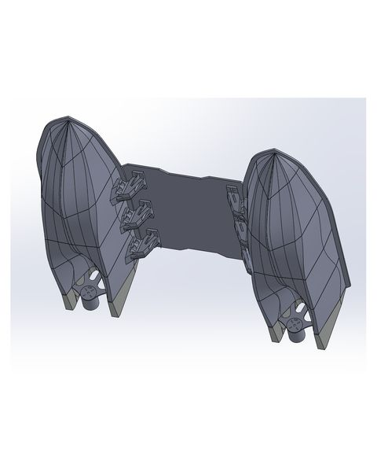
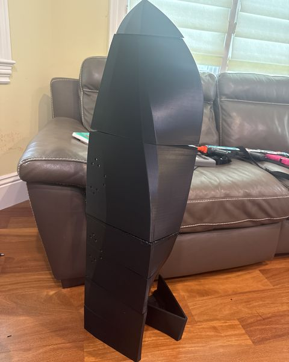
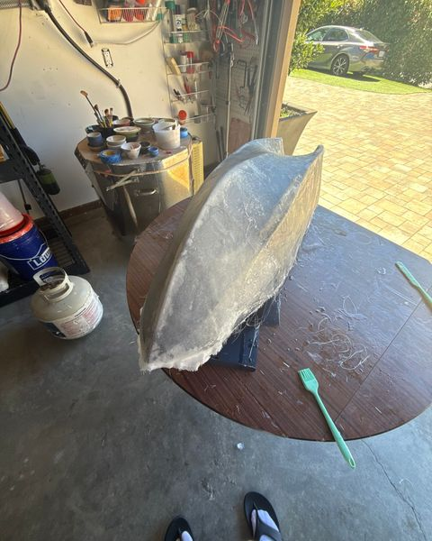
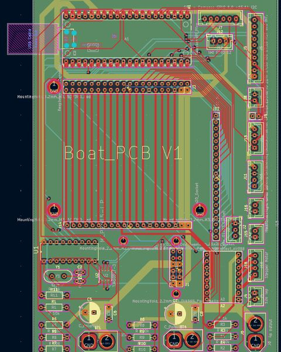
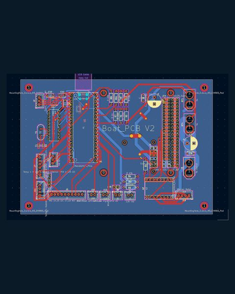
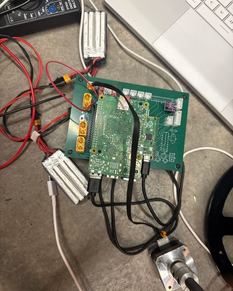
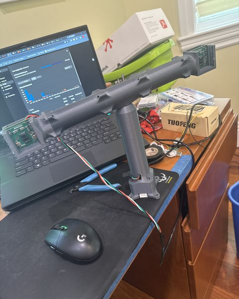
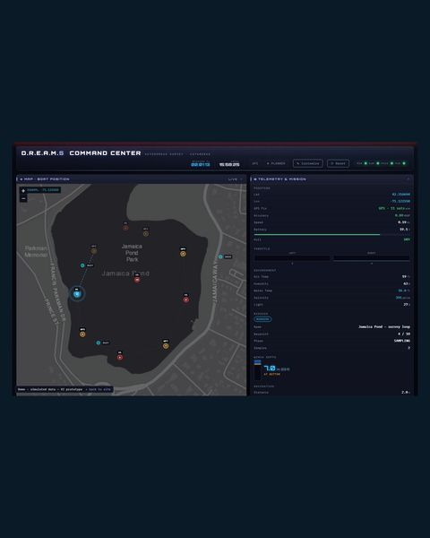
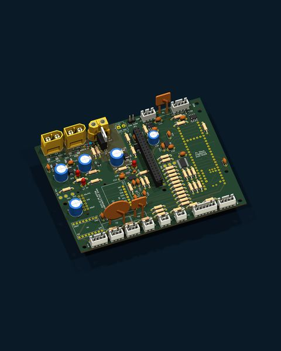
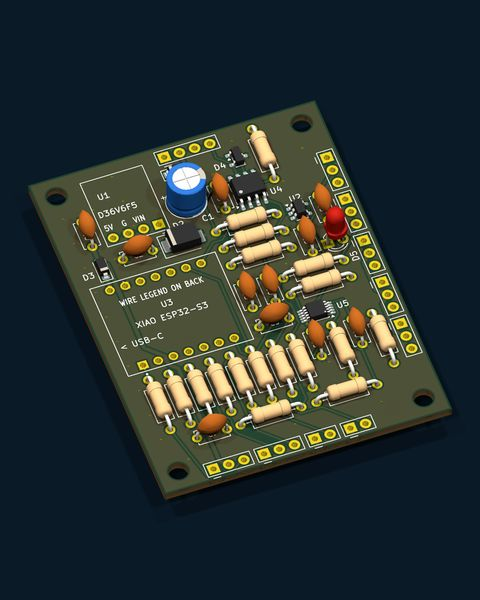
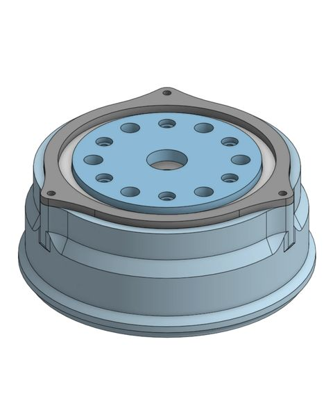
Each version fixes what the last one taught us.
Built in one semester in London: three RP2040 microcontrollers on the boat, shore station and pod, a 3D-printed PLA hull, and a 433 MHz radio link that reached about 1 km to shore.
In its water test at St Katharine Docks it navigated to GPS waypoints on its own, and its pod sampled temperature, conductivity and light at the bottom.
V2 moved the brain to a Raspberry Pi 5 and prototyped stereo depth with YOLOv8 obstacle detection, a live web dashboard and our first custom PCB.
It was never fully built. Bench testing exposed flaws in its motor control, power and safety design, and those lessons led us to redesign the whole system.
A ground-up redesign that fixes what V2 got wrong: a Teensy 4.1 real-time core, CAN-bus motor control, isolated power domains and a new RS-485 sensor pod, with a fish-finder sonar for depth. The carrier and pod boards are laid out and checked.
The goal: autonomous surface surveys of small bodies of water. Right now we're talking with the Charles River Watershed Association (CRWA) about data collection.
We'd rather show you what didn't work than pretend everything did.
An early jet-propulsion experiment on V1 that didn't work out. A dead end, but a useful one: it taught us early what to keep simple.
Bench testing showed that V2's motor control, power and safety design weren't reliable enough to put on the water.
Fix in V3Real-time control moved to a Teensy 4.1, each VESC became its own CAN node, power was split into three isolated domains, and the winch driver got a fail-safe hardware kill, ready for the later sample-collection stage.
V3's goal is deliberately focused: drive itself around small bodies of water and collect data at the surface. Collecting physical samples comes later.
Autonomous waypoint navigation, a 1 km radio link and bottom sampling, on a 3D-printed hull.
CompletePi 5, stereo vision and our first PCB. Never fully built; its flaws drove V3.
PrototypeV3 will drive itself around small bodies of water, sample at the surface with the pod and measure depth with a fish-finder sonar.
In buildA robotic arm on deck that works with the winch to collect water samples and sediment from the bottom.
Arm in developmentV3 milestones
Carrier board (rev D) and sensor-pod board (rev B) laid out and checked.
A modular hull in CAD, built around the V3 electronics.
Fabricate the boards and assemble the electronics, pod and fish finder into the hull.
Autonomous waypoint navigation, surface sampling and depth logging, streamed to the dashboard.
Surveys of small bodies of water, shaped by our conversations with the CRWA.
In our conversations with the Port of Oakland and the Charles River Watershed Association, we learned that their teams still collect sediment samples by sending divers down. An arm on an autonomous boat could do that job without anyone going in the water.